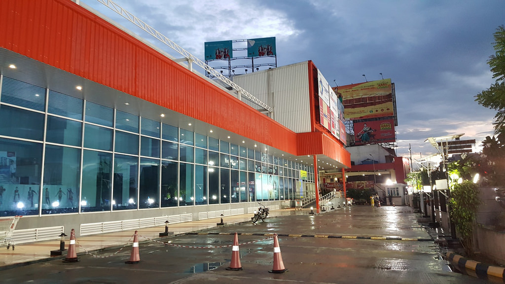

1 / 3

Caption Text
1 / 3
Caption Text
2 / 3
Caption Two
3 / 3

Caption Three
Change image every 4 seconds:
The Paravasa Ulagam Water Theme Park is situated at 16 km from the city of Salem, near Mallur on the National Highway 7. This water park comprises a green and calm environment, complimented by water games, go-karting, biking, a wave pool, video games, a science park and water falls.
Sri Thanthondreeswarar Temple or Sri Thanthondrieswarar Temple ( Thanthondreeswarar Temple ) is at Belur in the Indian state of Tamil Nadu.The temple was built by the Cholas kingdom in the 12th century AD. The main deity is Lord Thanthondreeswarar (Lord Shiva) and the female deity is Goddess Dharmasamvarthini. Thanthondreeswarar Temple is located on the banks of Vasishta Nadi (Vasishta River). The temple has a serene atmosphere and is surrounded by beautiful hillocks. This temple comes under the Hindu Religious Charitable Endowment Departme
The mega Reliance Greenfield Mall, the work of which is fast working at the construction site of Reliance Greenfield Mall in Salem city